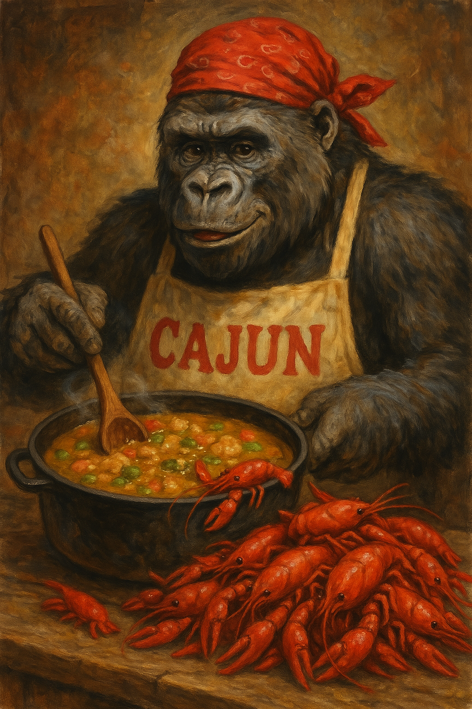

Cajun Popcorn

Ingredients
- 1 lb crawfish tails
- 2 eggs
- 1¼ C milk (or Half-and-half)
- 1 tbs creole mustard
- 1 tsp Louisiana hot sauce
- 1 C corn flour
- ½ C flour
- 1 tsp salt
- 1 tsp sugar
- 1 tsp Cajun seasoning
- oil for deep frying
Directions
- Make Batter: Whisk eggs, milk, Creole mustard, and hot sauce. Add dry ingredients and stir until the batter has the consistency of heavy cream. Rest 1 hour.
- Coat Crawfish: Add crawfish tails to the batter and toss until fully coated.
- Fry: Heat oil to 350°F. Fry battered crawfish 2-3 minutes, until golden brown.
- Drain & Serve: Drain on a wire rack and serve with your choice of dressings.
Chef's Notes
- Great in salads or po-boy sandwiches.
- The picture is me in the kitchen
The Gumbo Page
Michael Fritsche
mbf@fritsche.org